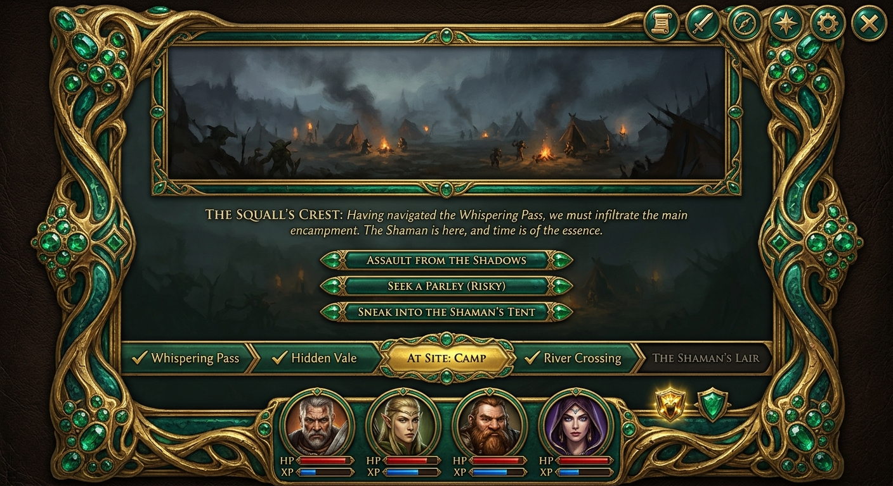
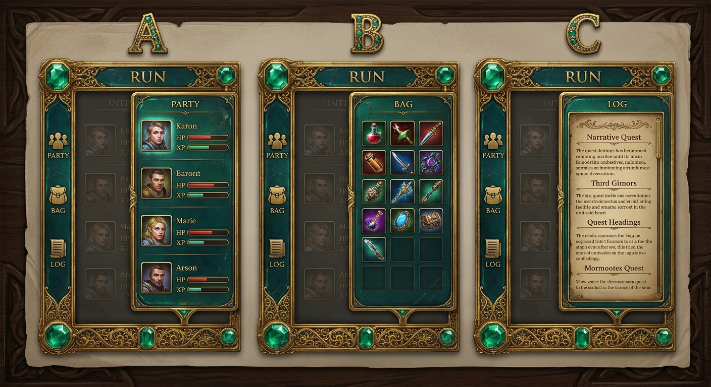
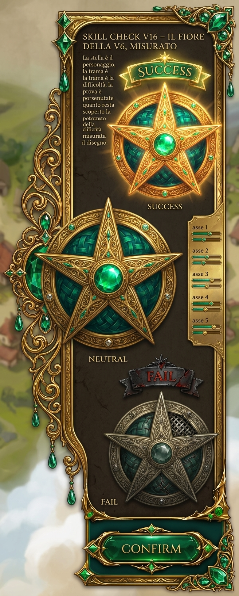
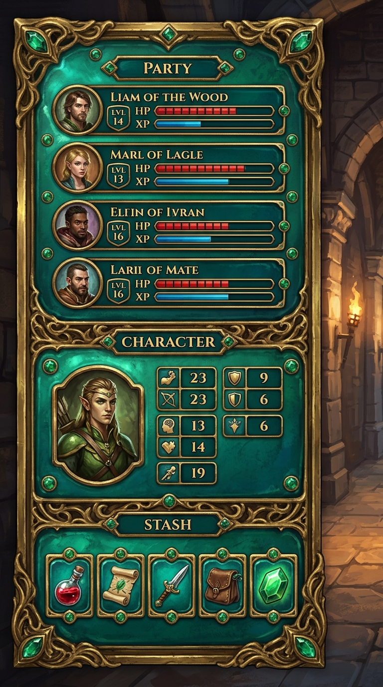
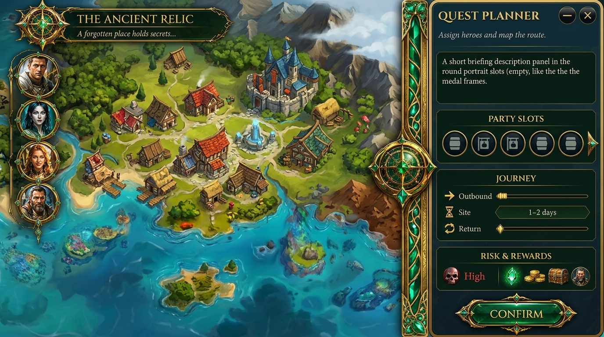
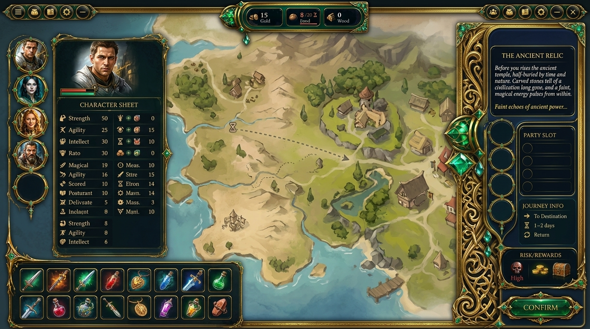
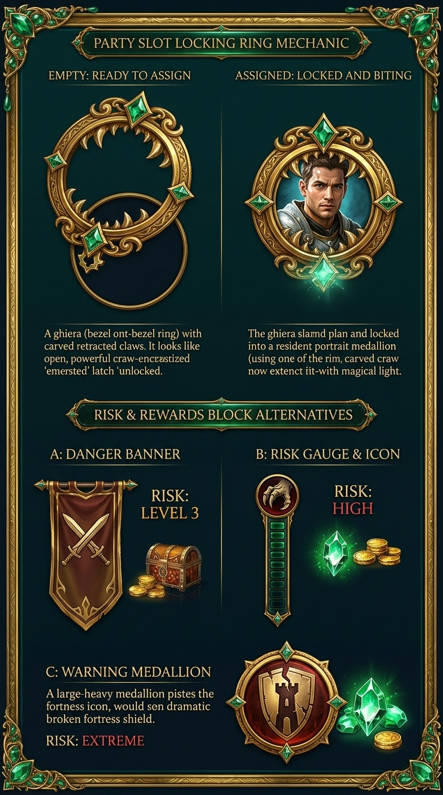
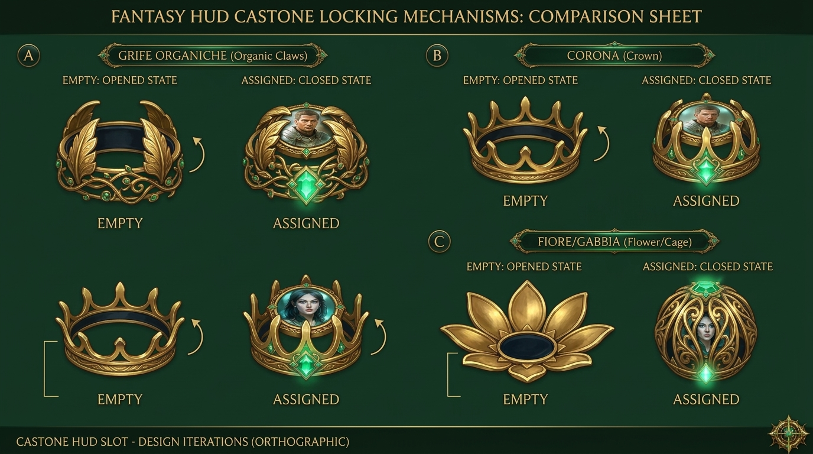

B — la coppia corretta (ruling finale)
★ Le 4 tavole nuove sono le prime 4 schede qui sotto — gli altri blocchi sono storico.
★ QUEST RUN — v3 enamelware (ruling)
★ jeweled enamelware pittorico: oro intagliato + grappoli smeraldo · scena letterbox · narrativa + 3 scelte · strip fasi completate ✓ · dashboard 4 membri HP/XP · badges risk/reward · 6 rail.

★ RUN SIDE-PANEL — companion column (meccanismo vero, ruling)
★ jeweled enamelware: companion rail sx + colonna che si espande in-window — A party · B bag · C log. Pittorico, in tono.

★ SKILL-CHECK — reskin componente reale + esito (ruling)
★ reskin ancorato sull'HUD intera — oro intagliato + filigrana + intarsi smeraldo + smalto teal + smeraldo centrale + cornice con grappoli+pendenti. 3 stati: SUCCESS / NEUTRAL / FAIL con assi reali. Jeweled enamelware pittorico.

★ MOBILE COMPAGNIA — 3 varianti (ruling)
★ jeweled enamelware: mobile compagnia con PARTY (ritratti+HP/XP) + CHARACTER (stats) + STASH — oro intagliato + smalto teal + gemme. Pittorico.

PLANNER — cassetto agganciato al bordo destro della mappa
Non una card: un DRAWER che esce dal bordo dx, alto tutto lo schermo, con cucitura oro-smeraldo e fermo a bussola. La mappa resta viva e interattiva a sx. Dentro: briefing, 5 slot party (+freccia per secondo gruppo), journey, risk&rewards, CONFIRM in fondo.

COMPOSIZIONE PIANIFICAZIONE — mobile compagnia sx + mappa + cassetto planner dx
La forma completa: rail roster + scheda personaggio + fila magazzino nella fascia sinistra; la mappa viva al centro con rotta; cassetto planner a dx (cucitura intagliata, fermi a gemma): briefing + 5 slot party + journey + risk&rewards + CONFIRM.

CASSETTO (componente solo) — planner drawer ricco
Il dossier da solo, opulento: cucitura a voluta d'oro scolpita con spilla smeraldo + pendenti, cartiglio titolo, briefing, party slots 5+espansione, journey strip, risk&rewards (medaglione pericolo + tesoro), CONFIRM ornato.

GHIERA corretta + 3 direzioni RISK (nuova scheda)
Ghiera: EMPTY = mascella oro inclinata aperta sopra lo slot / ASSIGNED = ghiera sbattuta e serrata che morde il ritratto (la tua logica vera). Risk: A pennant armi incrociate · B gauge verticale + icona · C medaglione fortezza — senza teschio, senza dial.

INTERNI v2 — risk teschio ornato + journey 3 giorni
Risk: medaglione teschio oro-smeraldo + divider + forziere/monete/gemme. Journey: 3 tile numero-giorno (OUTBOUND·2D / AT SITE·6D / RETURN·2D) con freccia oro — minimale.

GHIERA ZANARA — la tua, reskin (3 artigli, fermo a punto smeraldo)
Il sistema reale reskinnato: anello oro intagliato + 3 artigli + piccolo punto smeraldo in basso (niente cuore). Stessa meccanica seat certificata.

CASTONE v2 twist-lock — ritratto piatto, ghiera ruota e chiude (corretto)
Stesso spirito ma meccanica esatta: ZERO tilt — ritratto sempre piatto/frontale, la ghiera ruota (baionetta) e serra le griffe sulla gemma. A griffe organiche · B corona · C fiore/gabbia.
